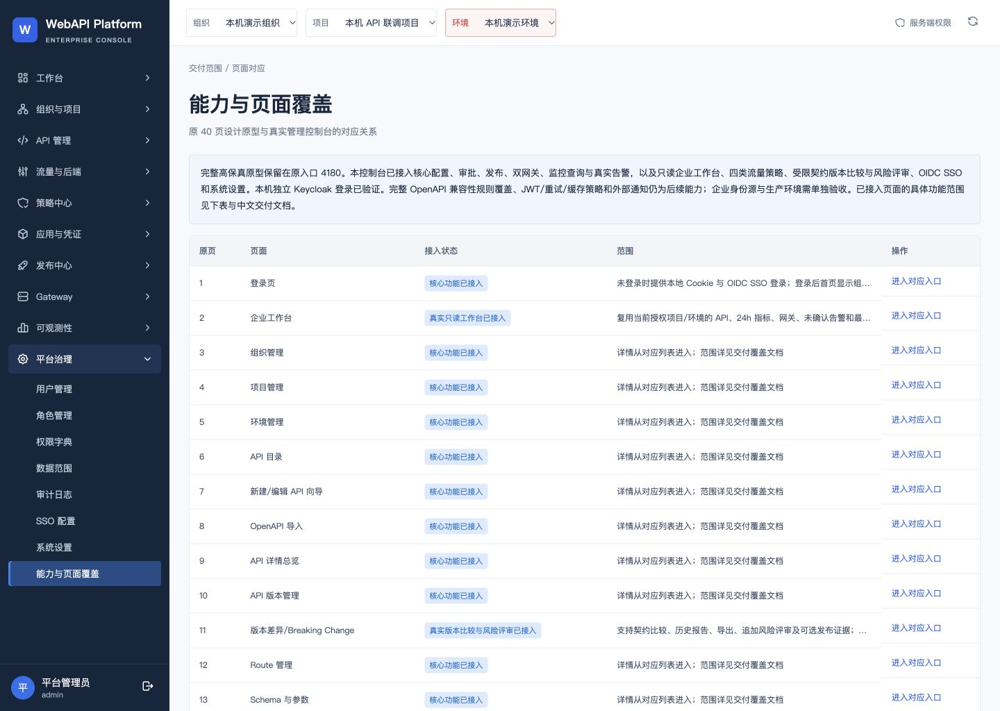
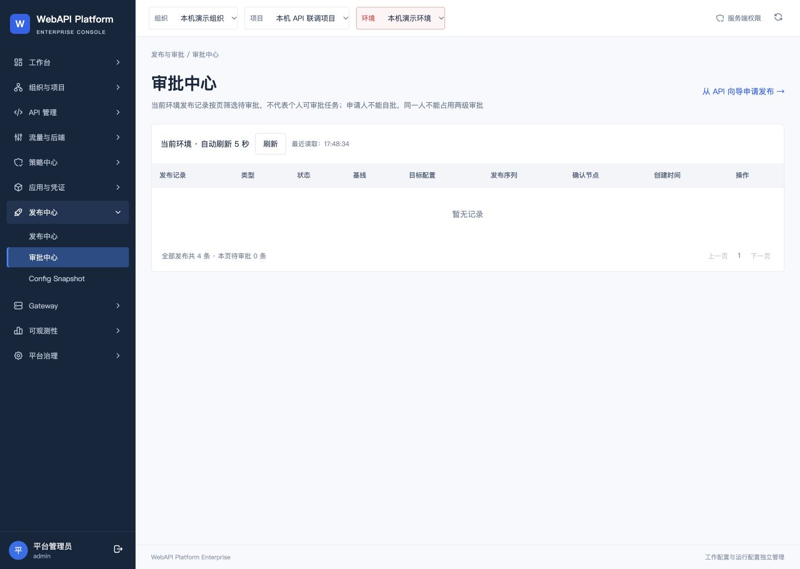
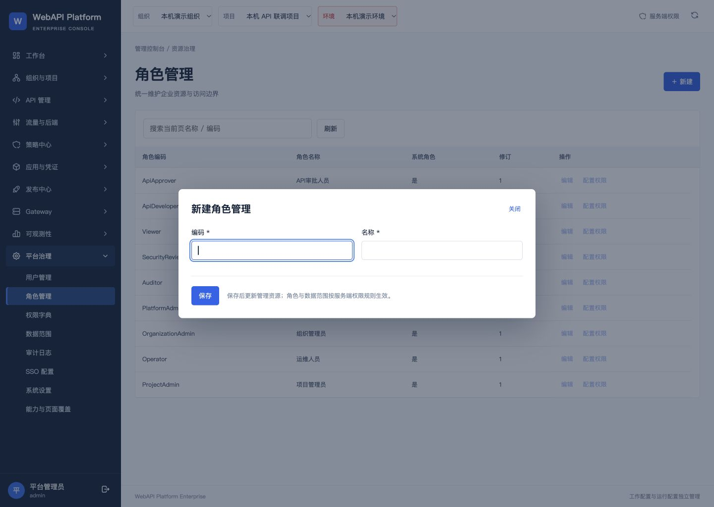

4192 显示修复已合并并部署
2026-10-06 · 桌面端1440×1024 · 本机验收99/99现有前端测试
33 表保持含权限、SSO、版本比较与风险评审
双网关 Ready业务版本v4 / seq4
原账号、原密码、原SSO配置与数据均保留；原管理工具保持固定版本。仅四个前端显示文件进入本地提交并快进合并，未推送。
源码：d0555941bd134737544bdf1d06164a5bbe5a8b0e
镜像：sha256:cce2e8c0c69ea326926077efa544f8c55788589ccfd4ec13239e6ca8ef4a24e3
打开4192覆盖清单 · 验收回执版本比较入口
删除过期验收标记，展示受限契约比较与风险评审现状。

审批中心
全部发布总数与本页待审批数量分开显示；原查询和分页规则保持。

管理资源表单
帮助文案说明管理资源与服务端权限生效规则。未提交表单。

保留与恢复证据
- 平台7卷和Keycloak4卷冷备份，20+12个备份文件SHA回读通过。备份含凭据，保留于私有运行目录，交付包不包含。
- 平台7卷物理恢复通过；克隆中完成新版本→旧版本→新版本回退演练，33表和EF迁移记录保持。
- 原3个本地账号及真实Keycloak Viewer登录验证通过，Viewer写入拒绝403，退出后401。
- 4192静态三文件SHA一致，双网关代理返回200，业务发布v4/seq4保持。
- 168个原本地文件、24个历史归档哈希保持。隔离克隆容器、卷、网络和临时凭据已清理，私有冷备份与旧镜像保留。
验收边界与历史记录
本批只验收三项显示修复在4192的上线状态，不等同于40页完整交互、全部权限或生产验收。原40页入口QA包保留为预览阶段历史记录。
首次受限测试因本机端口权限失败，授权环境重跑99/99通过，保留两次日志。本批Keycloak未变更，执行冷备份与真实登录验证；未重复执行IdP物理恢复。此前QA发现的字段编辑体验与完整权限矩阵核查仍按原范围待后续处理。
原40页入口QA报告（主目录相邻文件） · 执行记录